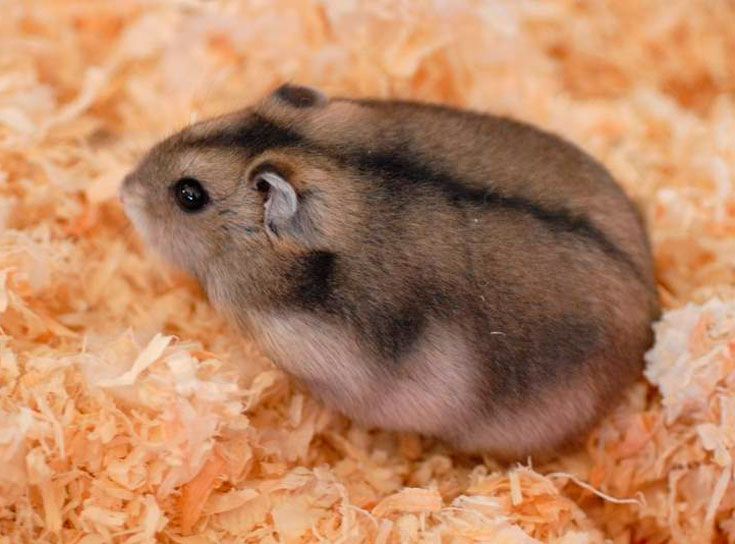
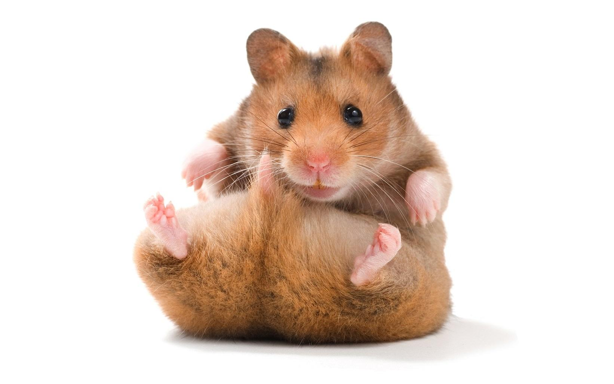

Хомяки являются более сумеречными, чем ночными животными и, в дикой природе, остаются под землей в течение дня, чтобы не быть пойманными хищниками. Они питаются, главным образом, семенами, фруктами и растительностью, и иногда питаются роющими насекомыми. Физически они имеют крепкое тело с отличительными чертами, которые включают удлинённые щёчные мешочки, простирающиеся до их плеч, которые они используют для переноса пищи в свои норы, а также короткий хвост и покрытые мехом ноги.
Хомяк сирийский - самый распространенный вид хомяков

Любят:
- Бегать в колесе
- Есть зёрна
- Спать и ещё раз спать!
Происхождение слова хомяк:
Слово «хомяк» произошло от др.-русск. хомѣкы, ст.‑слав. хомѣсторъ. Славянские языки, возможно, позаимствовали его из древнеиранского; родственное слово — авестийское hamaēstar, «враг, повергающий на землю» (имеется в виду, что хомяк нагибает стебли злаков к земле, чтобы достать семена)[8]. Д.-в.-н. hamustro (откуда произошли современные англ. hamster и нем. Hamster) вероятно заимствовано из старославянского
Хомяк карбыш

Самый крупный представитель подсемейства хомяков. Длина тела у взрослых самцов 27—34 см, хвоста 3—8 см, масса тела в среднем 700 г. Хвост толстый в основании, быстро утончается к концу, покрыт короткими и жёсткими волосами. Морда умеренной длины. Ушные раковины довольно короткие, покрыты тонкими, темноватыми волосами. Кисть и стопа широкие, а на пальцах хорошо развитые когти. Волосяной покров густой и мягкий. Окраска шкуры яркая, контрастная: верх тела однотонный, рыжевато-бурый, брюшко чёрное. Спереди на боках — два больших светлых пятна, обычно разделённые участком чёрного меха. По светлому пятну имеется также по бокам головы и за ушами, иногда и в области лопаток. Часто встречаются полностью чёрные экземпляры (меланисты) или чёрные экземпляры с белыми пятнами на лапах и горле. Описано более 10 подвидов. Окраска хомяков в пределах ареала светлеет с севера на юг; размеры тела растут с запада на восток и с севера на юг.
- Бегать
- Есть зёрна
- Воровать с чужих огородов
Хомяк Джунгарский

Джунга́рский хомячо́к (лат. Phodopus sungorus) — вид мохноногих хомячков семейства Хомяковые. Популярное домашнее животное. Длина до 10 см, масса 25—65 граммов, в дикой природе живут примерно 12 месяцев (1 год), в неволе живут 2 года, в среднем 1,8 года. Имеет покрытые шерстью ступни, тёмную полосу на спине (обычно серую), очень короткий хвост (часто его практически не видно, когда зверёк сидит). Мех отличается значительными белыми вкраплениями
Лемминг

У всех леммингов плотное телосложение, короткие лапы и хвост, маленькие, скрытые в меху уши. Длина тела 10–15 см, длина хвоста — до 2 см, масса животного — 20–70 г. Окраска одноцветная, серовато-бурая или пёстрая. У копытных леммингов зимой мех сильно светлеет или белеет, а когти средних пальцев передних лап сильно разрастаются, образуя некоторое подобие лопатки, так называемое «копытце». При этом разрастание происходит как за счёт увеличения самого когтя, так и из-за разрастания ороговевших подушечек пальцев и подошвенных пластинок, в результате «копытце» оказывается вильчато-раздвоенным на конце. Живут в тунднре
Хомяк Кэмпбелла

Похож на джунгарского хомячка. Длина тела с головой 76—105 мм, хвост короткий (4—14 мм); весит около 40—60 г. Голова округлая, морда короткая. В природе шерсть тёмно-серая с коричневым, на спине от шеи до основания хвоста тёмная полоса, волос на брюхе серый у основания и белёсый к кончику, подошвы покрыты белым волосом. Домашние же хомячки бывают самых разнообразных цветов, от чёрного до белого[5]. Цвет шерсти постоянный, от времени года не зависит
Хомячок Роборовского

Один из самых маленьких видов семейства хомяковых. Взрослые особи достигают в длину до 4—5 см и весят примерно 30 граммов. Голова и спина песочно-золотого цвета, живот белый. Над глазами присутствуют светлые пятна.
Всем пока!
